Сделано в России
Разработка и серийное производство
лодочных моторов
НПП «Патриот» — современное российское предприятие, деятельность которого направлена на создание лодочных моторов исключительно на отечественной компонентной базе.
- 80 л.с.
- серийная модель
- 100%
- российские компоненты
- ×2
- ресурс выше импортных аналогов
- 2000
- моторов в год — план
Возрождаем отечественное моторостроение
Массовое производство лодочных моторов в СССР началось в 1950-х годах. Моторы серий «Салют», «Стрела», «Прибой», «Ветерок», «Москва», «Нептун», «Вихрь» пользовались широкой популярностью у миллионов владельцев лодок. Однако к 2008 году серийное производство подвесных лодочных моторов в России было полностью прекращено.
НПП «Патриот» разрабатывает подвесные лодочные моторы на основе накопленного отраслевого опыта, создавая продукцию импортозамещения полностью из компонентов российского производства.
«Массовое производство подвесных лодочных моторов за счёт креативных решений, современных технологий и инноваций»
-
01
Повышенная надёжность
Конструкция и материалы рассчитаны на суровые условия эксплуатации.
-
02
Низкая стоимость владения
Экономичное обслуживание и доступные запасные части.
-
03
Простота обслуживания
Сервис на базе широко распространённых автомобильных агрегатов.
Предпосылки
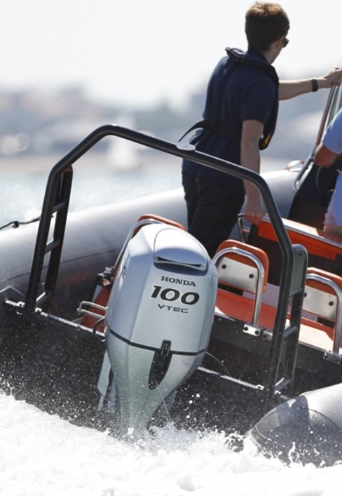
В настоящее время в Российской Федерации полностью отсутствует производство подвесных лодочных моторов, что приводит к использованию продукции зарубежных производителей (США, Япония, Китай, Канада), в том числе и для объектов спецназначения. В сложившейся ситуации происходит снижение обороноспособности страны и ограничение вывода итогового продукта на рынок.
Отдельно стоит отметить, что большинство зарубежных производителей лодочных моторов не имеют сервисных центров и должного запаса запасных частей на своих складах — существует проблема доступности запчастей, расходных материалов и качественного сервисного обслуживания.
Концепция
- Применение отечественного серийного двигателя
- Минимальное внесение изменений в конструкцию двигателя
- Использование существующей дилерской сети для распространения и обслуживания
- Высокая доступность запасных частей и расходных материалов
- Высокая ремонтопригодность
- Возможность самостоятельного ремонта и обслуживания
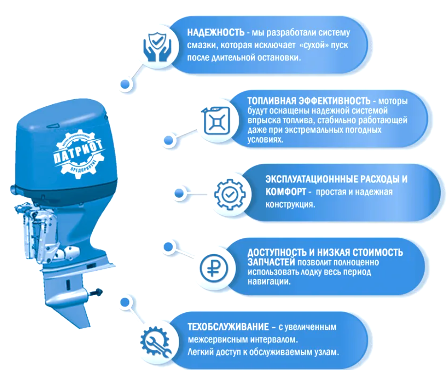
Команда и компетенции
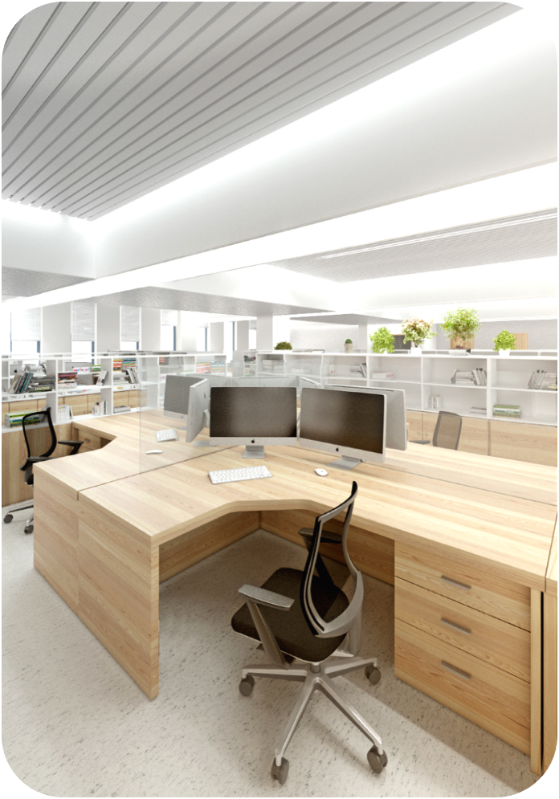
ООО «НПП-Патриот» является резидентом ОЭЗ ТВТ «Дубна», где расположены производственные мощности предприятия. В настоящий момент в штате более 15 инженеров с высокой квалификацией.
МГТУ им. Н.Э. Баумана
ГНЦ РФ ФГУП НАМИ
МГТУ им. Н.Э. Баумана
АО АвтоВАЗ
применение отечественного ПО
Партнёрская сеть и сотрудничество
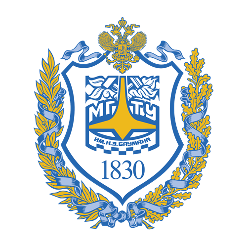
МГТУ им. Н.Э. Баумана
Лаборатория водного транспорта
На базе Научно-образовательного центра «Конструкторское бюро молодёжи» МГТУ им. Н.Э. Баумана создана лаборатория водного транспорта. Совместно с ООО «НПП-Патриот» проводятся работы по испытанию ПЛМ мощностью 80–150 л.с.
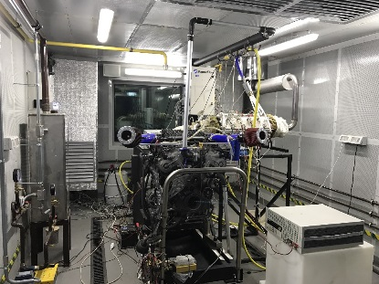
ФГУП НАМИ
Партнёрская деятельность
В 2025 году подписано соглашение о сотрудничестве с ФГУП НАМИ в части реализации совместных проектов по разработке, созданию и проведению испытаний перспективных образцов подвесных и стационарных лодочных моторов, в том числе созданных на базе существующих автомобильных двигателей.
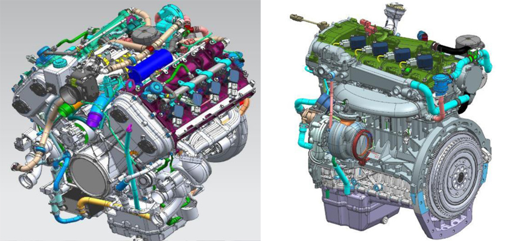
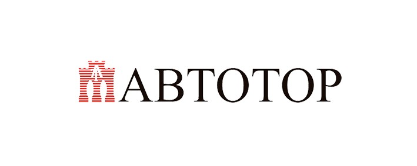
АВТОТОР
Проработка серийного производства
Прорабатывается партнёрство в части производства компонентов ПЛМ с ООО «Завод Автокомпонентов» АВТОТОР» — запуск опытных образцов и серийное производство корпусных элементов. Ведутся переговоры с АО «РУСАЛ» по перспективным конструкциям из алюминиевого сплава.
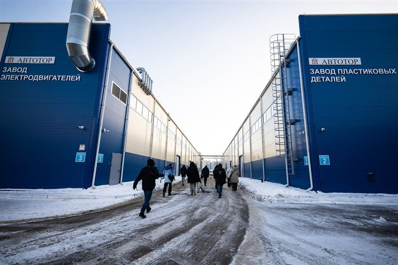
Национальная ассоциация маломерного судоходства
Проведение совместных испытаний
Прорабатывается сотрудничество в части проведения совместных испытаний опытных образцов, а также применения разрабатываемых моторов для спортивных исполнений лодок и участия в соревнованиях. Высокая заинтересованность производителей катеров и БЭКов в отечественных ПЛМ мощностью 40–600 л.с.
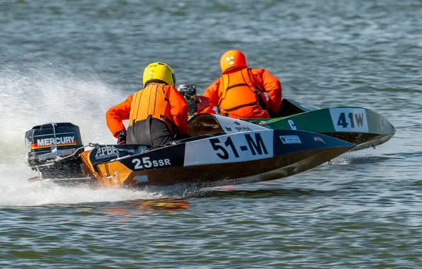
Моторы «Патриот»
ПАТРИОТ 80
Подвесной лодочный мотор на базе серийного двигателя ВАЗ‑11182
Габариты
Двигатель
Рабочие параметры
Системы и жидкости
Предназначен для судов с длиной корпуса 5–6 м. Ресурс работы вдвое превышает импортные аналоги.
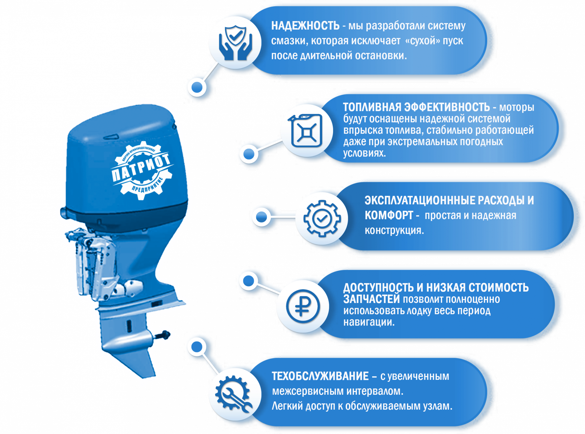
Перспективные разработки
Семейство ПЛМ мощностью 60–80 л.с.
Подвесной лодочный мотор максимальной мощностью 80 л.с. Разработан для маломерных судов, обладает следующими характеристиками:
* Уточняется, выполняется этап ОКР
Подготовлен опытный образец, в настоящее время проводятся предварительные стендовые испытания. По результату испытаний будут внесены изменения в конструкцию. Готовность — 2027 год.
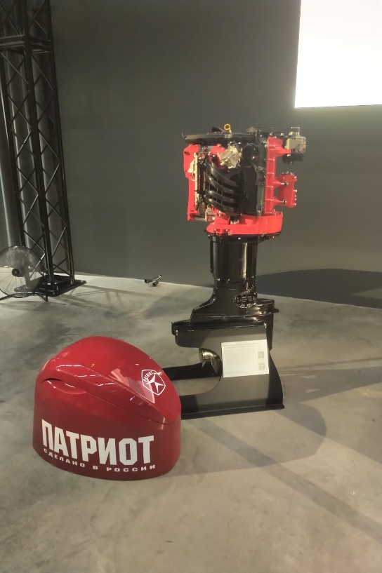
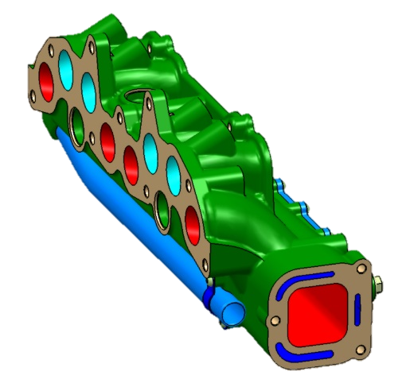
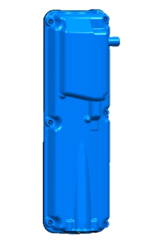
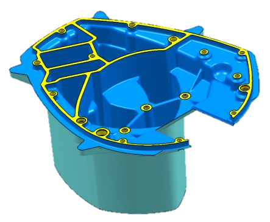
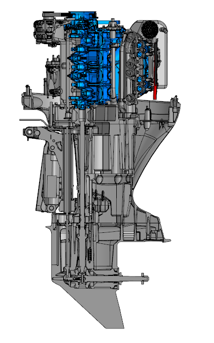
Семейство ПЛМ мощностью 80–150 л.с.
Разработан эскизный проект семейства подвесного лодочного мотора в диапазоне мощностей 80–150 л.с. В качестве базового двигателя заложен поршневой двигатель отечественного производства — АО «АвтоВАЗ». С целью выполнения требований по унификации и стандартизации в разрабатываемых изделиях применяются стандартные и унифицированные узлы и детали отечественного производства.
В настоящее время ведётся разработка технического проекта, в рамках которого будет представлен комплект конструкторской документации, необходимый для изготовления опытных образцов ПЛМ семейства. Конструкция основных узлов и систем разрабатывается с оценкой технологичности, с целью обеспечения дальнейшего серийного производства на специализированном российском предприятии. Результат данной работы — промышленный образец.
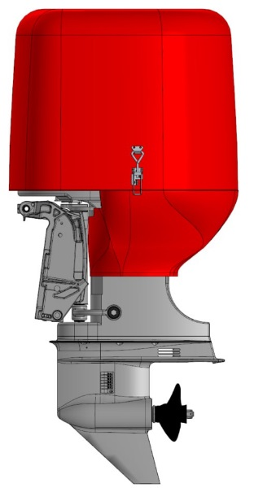
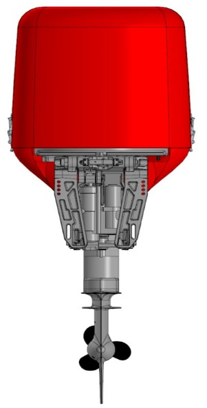
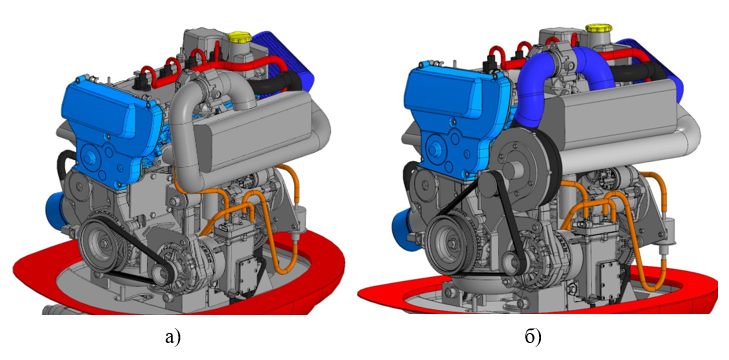
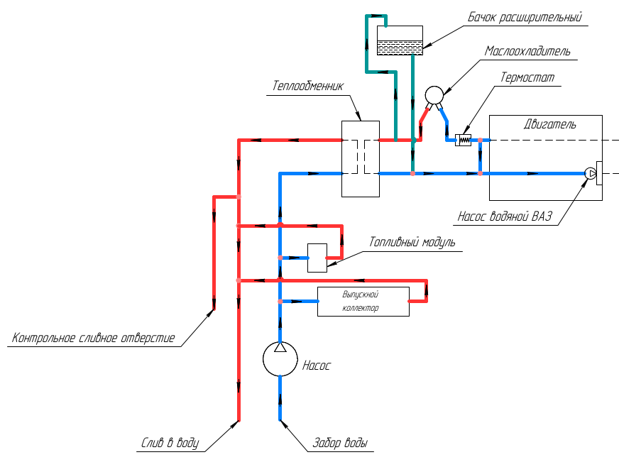
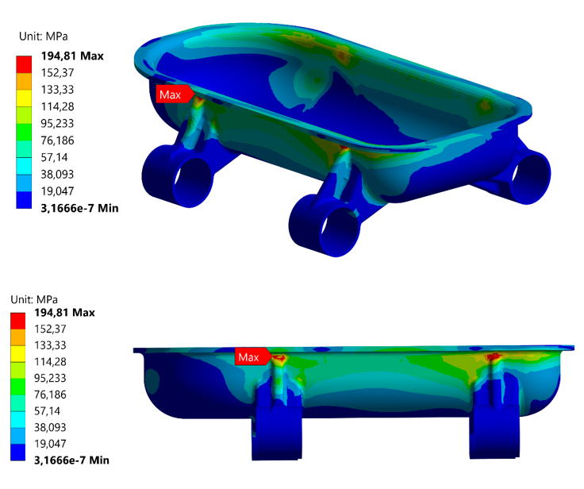
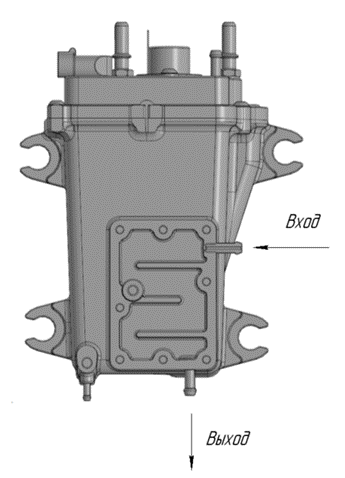
Семейство ПЛМ мощностью 40–60 л.с.
Подвесной лодочный мотор максимальной мощностью 60 л.с. Разработан для маломерных судов, обладает следующими характеристиками:
* Уточняется, выполняется этап ОКР
Двигатель РМЗ-551i: 2-тактный, 2-цилиндровый, инжекторный, мощность 65 л.с., масса 29,5 кг, максимальная частота вращения 7600 мин⁻¹.
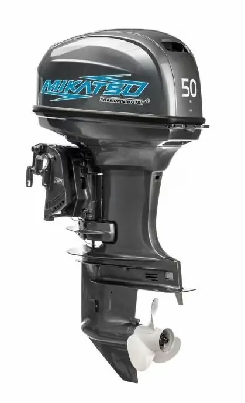
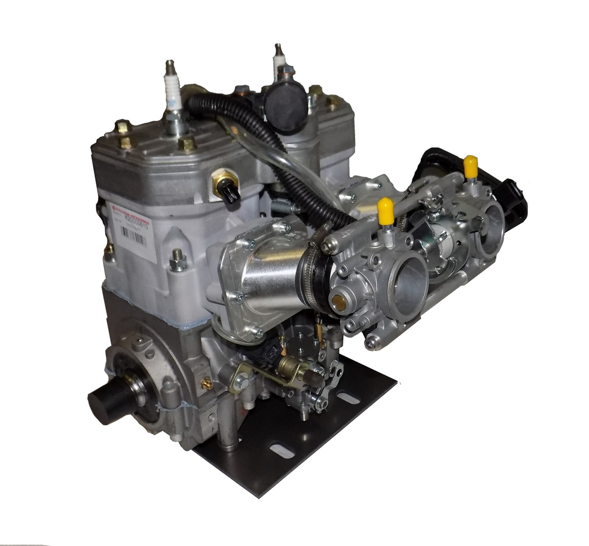
ПЛМ мощностью 250–600 л.с.
В данном классе мощностей (от 250 л.с. до 600 л.с.) присутствуют как скоростные катера (лодки), так и яхты до 15 метров. Существует высокая потребность рынка в подвесных лодочных моторах высокой мощности (350–450 л.с.).
Широкая унификация с серийным автомобильным двигателем позволит создать конкурентоспособный продукт, а с учётом уникального предложения на отечественном рынке данный продукт может занять нишу премиального статусного продукта с ограниченной серийностью. Имеется широкий экспортный потенциал в связи с отсутствием конкуренции — единственный аналог на рынке: Mercury Verado 600.
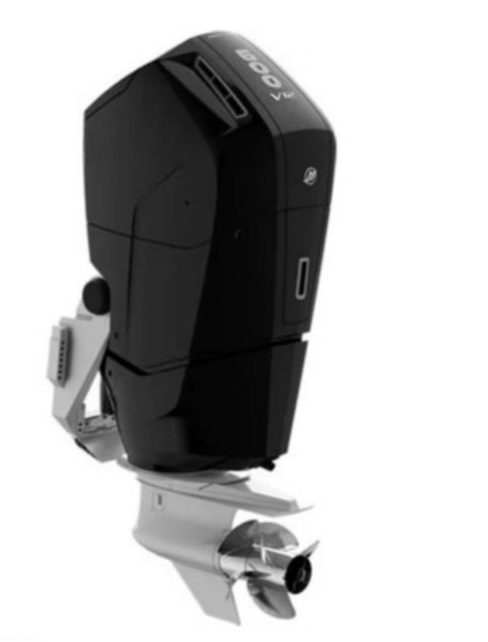
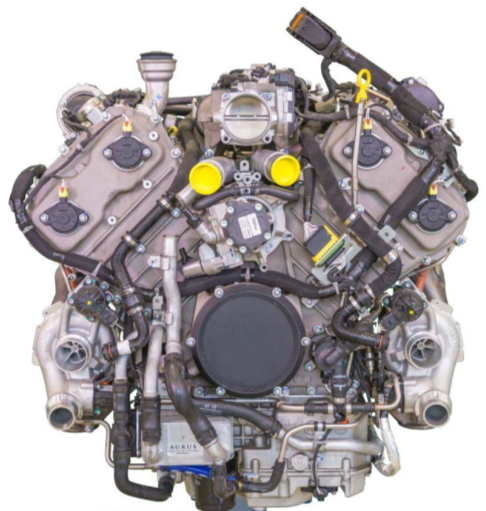
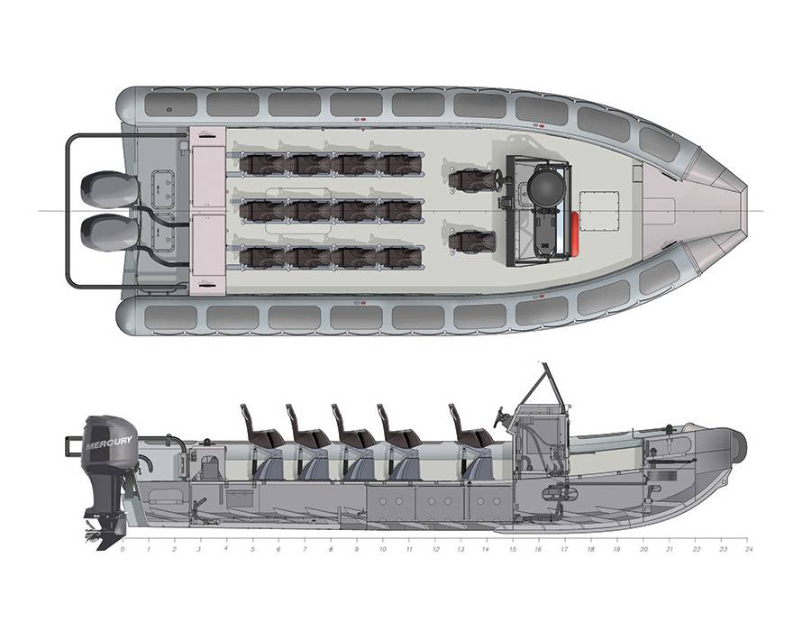
Инициативные разработки
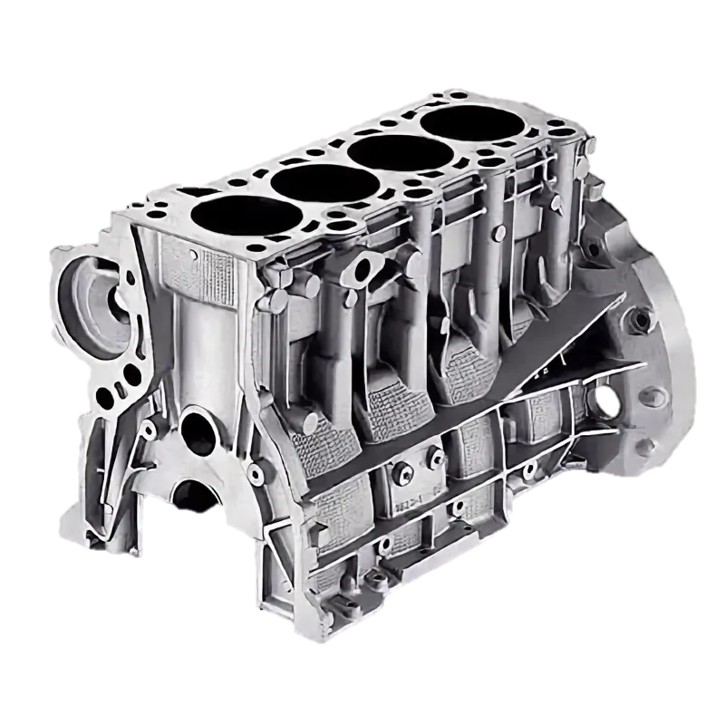
Алюминиевый блок цилиндров
Отдельная задача, связанная с расширением потребительских свойств ПЛМ — снижение массо-габаритных показателей. Ведётся разработка блока цилиндров из алюминиевого сплава совместно со специалистами ПАО «АВТОВАЗ» и ООО «Завод Автокомпонентов» АВТОТОР». Реализация проекта позволит снизить массу мотора вплоть до 20–30 кг.
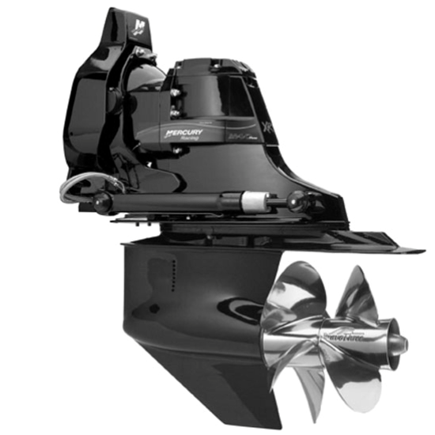
Производство кормового привода
В рамках развития производственной площадки прорабатывается проект прямого реверс-инжиниринга кормового привода Bravo 2 и Bravo 3 — быстрый выход на глиссирование при меньших оборотах двигателя и экономия топлива. Планируется освоение выпуска компонентов кормового привода и редукторов ПЛМ.
Серийное производство в ОЭЗ «Дубна»
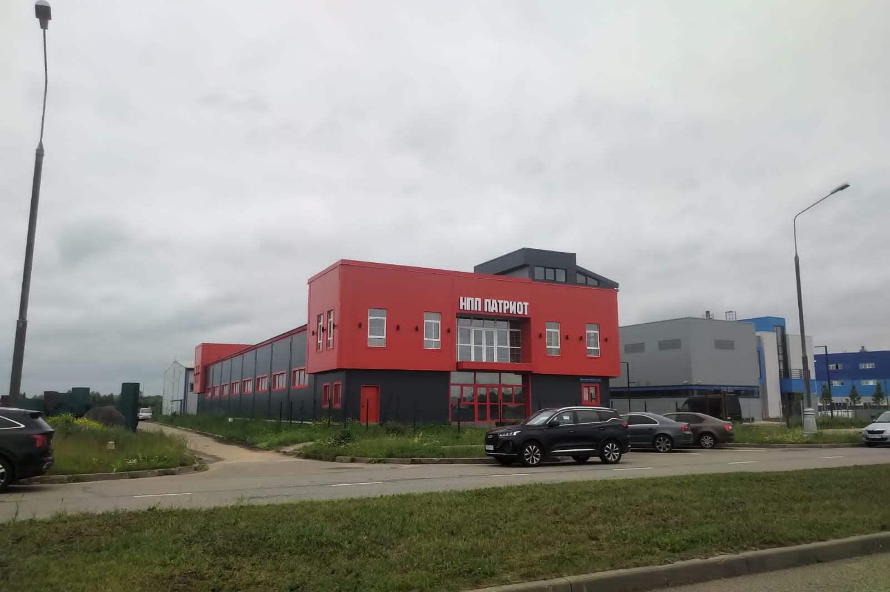
Сборочный цех НПП «Патриот», ОЭЗ «Дубна»Завершено строительство производственного сборочного цеха площадью 2000 м² в особой экономической зоне «Дубна» — мощностью до 720 моторов в год. Цех введён в эксплуатацию.
Приступили к строительству собственного литейного цеха (1500 м²) и обрабатывающего цеха (1500 м²). Плановый срок ввода — IV квартал 2027 года.
Структура завода включает производственный, литейный и обрабатывающий цеха с административным зданием, состоящим из одноэтажной части и двух двухэтажных блоков (АБК и АУП).
О нас пишут и рассказывают
Свяжитесь с нами
Дубна — производство
141984, Московская обл., г. Дубна, проспект Науки, дом 16А
Резидент ОЭЗ ТВТ «Дубна»